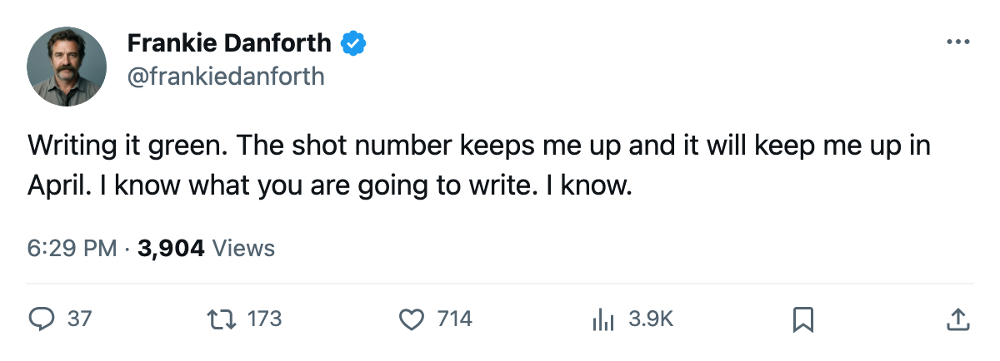

TOR
TORTHE PANIC METER: Code Green on nine straight, and 15 shots is still the number I keep
The Maple Leafs have won nine in a row and sit 32 points clear, but Sunday's shot count tells you what April looks like
 Frankie DanforthColumnist · Queen City Telegram
Frankie DanforthColumnist · Queen City Telegram
Code Green

I am writing it green. Nine in a row, 120 points in 74 games, plus-175 on the goal differential.  Boston Bruins is 32 back with 8 games left. The Northeast crown is a formality and I am writing the meter green and I want you to know I mean it.
Boston Bruins is 32 back with 8 games left. The Northeast crown is a formality and I am writing the meter green and I want you to know I mean it.
Toronto fired 15 shots at  Columbus Blue Jackets on Sunday. Columbus fired 30. The Maple Leafs won 3-1. The offense is finishing, and it is finishing with a volume that would get you shut out against a team that structures its neutral zone and makes you generate from the slot. You will not get 15 looks at Boston Bruins on Thursday. You will not get 15 looks at
Columbus Blue Jackets on Sunday. Columbus fired 30. The Maple Leafs won 3-1. The offense is finishing, and it is finishing with a volume that would get you shut out against a team that structures its neutral zone and makes you generate from the slot. You will not get 15 looks at Boston Bruins on Thursday. You will not get 15 looks at  Carolina Hurricanes on Friday.
Carolina Hurricanes on Friday.
The road trip is four of the next five. Boston Bruins, Carolina Hurricanes,  New York Islanders away,
New York Islanders away,  Washington Capitals home,
Washington Capitals home,  New Jersey Devils on the road again. Toronto is 28-9 away from home, good enough for second in the league, and the record says these roads are passable. The shot volume says April is a different building.
New Jersey Devils on the road again. Toronto is 28-9 away from home, good enough for second in the league, and the record says these roads are passable. The shot volume says April is a different building.
The Bureau's Development Index gives me something to read on the way to the rink.  Marian Gaborik99 at +6, the highest in the league.
Marian Gaborik99 at +6, the highest in the league.  Barret Jackman86 and
Barret Jackman86 and  Rostislav Klesla87 at +5.
Rostislav Klesla87 at +5.  Rick Nash85 at +5.
Rick Nash85 at +5.  Brad Richards89 at +4. Five risers from one club. That is a young core playing the best hockey of the season together, and
Brad Richards89 at +4. Five risers from one club. That is a young core playing the best hockey of the season together, and  Gary Roberts87 at 38 has 75 points in 19.8 minutes a night doing things a 38-year-old should not be doing.
Gary Roberts87 at 38 has 75 points in 19.8 minutes a night doing things a 38-year-old should not be doing.
Ed Taylor told The Tunnel's Jan Kowalczyk on deadline day that the club had "a few more potential deals on the table." No deal came. The 1C slot reads  Mats Sundin92, and only Mats Sundin. Richards is the second centre on this roster and he has 64 points and is playing the best hockey of his season. He is not the answer to the question I have been asking since October, and the 15-shot game is the proof. When the first line owns 20 minutes and generates nothing, you need a second centre who owns 18 minutes and generates 10 shots. That is the man the phone did not find.
Mats Sundin92, and only Mats Sundin. Richards is the second centre on this roster and he has 64 points and is playing the best hockey of his season. He is not the answer to the question I have been asking since October, and the 15-shot game is the proof. When the first line owns 20 minutes and generates nothing, you need a second centre who owns 18 minutes and generates 10 shots. That is the man the phone did not find.
The counter-argument writes itself: 120 points, plus-175, nine straight, five risers, a 4-0 sweep of Buffalo with a 29-3 differential about to become 5 games long. You do not fix what is doing this. And maybe you are right. I am writing it green. The 15-shot number is the one I keep.
